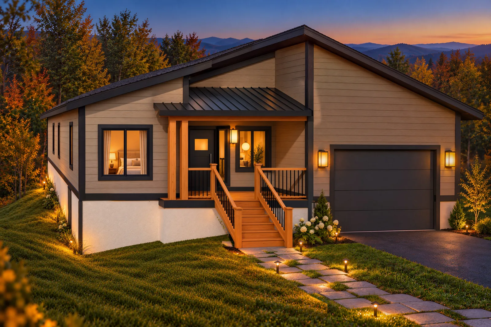

Your home at The Maples, before it is finished
Concept renderings of your Parade of Homes entry, put together for Alfonso.
- Prepared for
- Alfonso Socarras
- Builder
- Kogi Group
- Home
- The Maples at Concord Place, Asheville
- Date
- October 2026
- Prepared by
- Alex and Alexandra Lane, Tovizy

Alfonso,
We took the Parade of Homes rendering of your house and footage of the lot, and built the home in 3D on the real slope of the site. Everything on this page comes from that one model: five views of the house, two short films, and twelve ways to present the same home without moving a single wall.
This is a concept draft. With your elevations and finish selections we would match every window, material and color before anything goes to buyers.
Alex LaneTovizy, 3D visualization studio
Five views of the home.
The front at dusk and in golden light, the back deck, the entry and the lot from above. Tap any picture to see it larger.
The same house through the year.
Because every picture comes from the same model, the camera never moves: only the season and the light change.
Same home, same site, twelve moments.
The house and the lot stay exactly the same in every picture. Only the season, the weather and the story around the home change, so you can pick the ones that sell your homes best.
Signature Dusk
Golden Hour
Peak Autumn
First Snow
Spring Bloom
Valley Fog
After the Rain
Starry Night
Cinematic
Editorial
Welcome Home
Native Garden
What we would do next.
Match your drawings
Send the elevations, floor plan and finish selections, and we bring every window, material and color in line with them.
Rooms and a 360 tour
Interior views and a tour buyers can walk through on their phone while the house is still being built.
A sales page for the home
A page like this one under your name and logo, ready to text to a buyer.
Tell us what to change.
Reply to my email with notes on this draft, or send the drawings and we will start on the finished views.